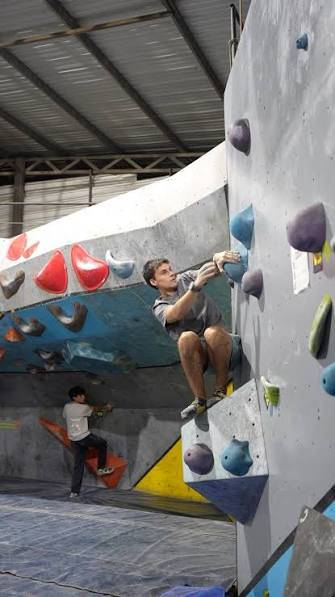
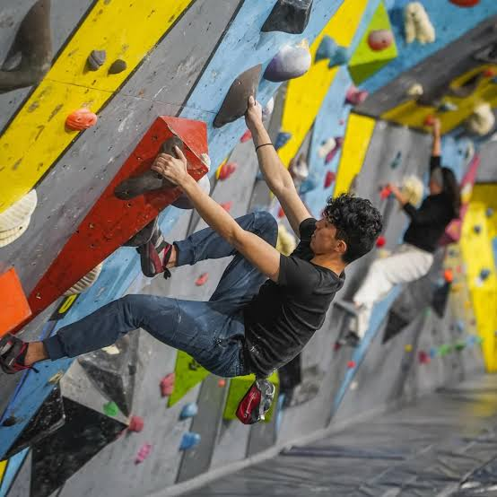
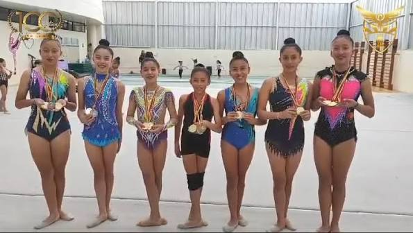
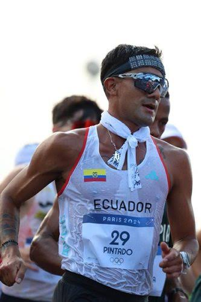

01 / Altura
Escalada deportiva
Fuerza, equilibrio y lectura de ruta en cada ascenso.
Movimiento deportivo en la provincia
Escalada deportiva, gimnasia rítmica y atletismo.
Tres disciplinas, una provincia llena de caminos para moverse, entrenar y competir.
Explorar disciplinas
Conoce algunas de las disciplinas deportivas que se practican en Pichincha.

Fuerza, equilibrio y lectura de ruta en cada ascenso.

Coordinación, flexibilidad y expresión a través del movimiento.

Velocidad, resistencia y técnica en cada distancia.
Consulta las fechas y convocatorias vigentes con las organizaciones deportivas de cada disciplina.